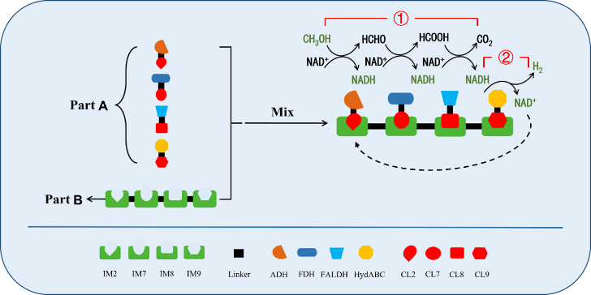
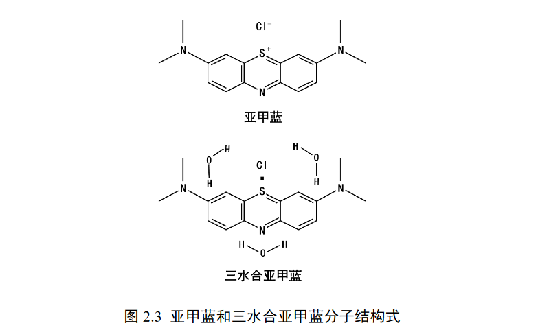
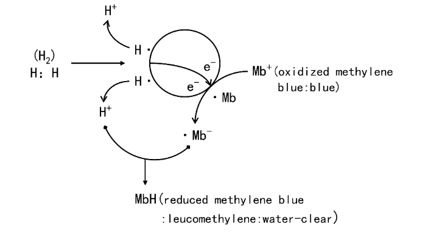

E X P E R I M E N T

Table 1.1 PCR system
Component | volume(μL) |
Gene templates（1ng/μL） | 1 |
Primer-F(5 nM) | 1 |
Primer-R(5 nM) | 1 |
2×Phanta Max Master Mix | 5 |
ddH2O | 2 |
Table 1.2 PCR procedures
steps | Time |
1：Pre-denaturation98℃ | 5 min |
2：denaturation98 C | 20 s |
3：anneal 58℃ | 20 s |
4：extension 72℃ | according to the clip size（2 kb/min) |
5: back to step 2 | 25 cycle |
6:Final extension 72℃ | 5min |
7:12℃ | 2min |
Table 2.1 BamHⅠ、Nde Ⅰ enzyme digestion system
Component |
| volume(μL) |
pET28a(1ug/μL) |
| 8 |
CutSmart |
| 5 |
BamHⅠ |
| 1 |
Nde Ⅰ |
| 1 |
ddH2O |
| 35 |
Total volume |
| 50 |
Table 2.2 BamHⅠ、Nde Ⅰdigestion method
procedure | Time |
37℃ | 40 min |
80C | 10 min |
12°C | 2 min |
The vector construction system includes: BamH Ι, Nde Ι double enzyme digestion after gel recovery to obtain the vector skeleton, PCR obtained gene fragments (the template has been eliminated with Dpn I), plasmid vector backbone and gene fragments are measured by NanoDrop nucleic acid concentration and reserved. The vector construction process of this experiment is as follows, taking the construction of trisubunit HydABCC hydrogenase expression vector as an example (Figure 3.1).
Table 3.1 T5 digestion reaction system
Component | volume(μL) |
Gene fragment of interest | By gene and vector molar ratio 3:1 addition |
plasmid backbone | By gene and vector molar ratio 3:1 addition |
T5 exonuclease (diluted 10-fold) | 0.5 |
NEB buffer 4 | 0.5 |
ddH2O | Up to 5 |
1. Add the mixture containing the above reaction system to an ice bath in a centrifuge tube for 5 min and thaw the competent cells at 4 °C.
2. In the clean stage, add 50-80 μL of E. coli DH5α to the EP tube, incubate on ice for 30 min, then heat shock at 42 °C for 45 s, add 150 μL of NZY liquid, incubate at 37 °C, 220 rpm for 40 min, coat on LB plates (containing appropriate concentrations of Amp and Kana), and incubate at 37 °C inverted for 12-15 h.
3. After the single bacteria grow in the plate, select about 8 single colonies in the ultra-clean table and inoculate them into LB liquid (containing appropriate concentrations of Amp and Kana), shake the bacteria at 220 rpm at 37 °C to OD600 to 1; perform colony PCR screening with T7 universal positive and negative primers, select 1-2 positive clones and send them to the corresponding company for sequencing, and plasmid extraction of successfully sequenced recombinants is stored at -20 °C for subsequent protein expression.
Figure 3.1 pETTrio-HydABCC expression plasmid construction flow
1. Regular conversion: E. coli BL21 (DE3) or C43 overexpress competent cells serve as hosts, and the successfully constructed recombinant plasmid vector described above is used for routine transformation of E. coli, followed by heterologous expression of subsequent recombinant proteins.
2. Seed culture: pick the transformed positive single colony and inoculate it into 10 mL liquid LK (containing 50 g/mL Kana) or liquid LA (containing 100 g/mL Amp), and then place it in a shaker at 37 °C at 220 rpm to reach 0.6~0.8 OD600.
3. Seed transfer: inoculate the seed solution in TB medium and culture until OD600 reaches 0.8~1.0.
4. Induction of expression: IPTG (final concentration of 1 mM) was added to induce the expression of recombinant protein, and the bacterial solution was cultured at 18 °C shaker at 220 rpm for 16~18 h.
5. Collect bacteria: after the end of induction, 6000 rpm, 4°C, 5 min high-speed refrigeration centrifugation to collect bacteria, 25 mL of TBS resuspension to wash the bacteria, 7000 rpm centrifugation for 5 min, bacteria stored at -80 °C for later use.
1. Resuspend the above collected spare bacteria with 30 mL PBS, and at the same time add 1% 100 mM serine protease inhibitor (PMSF) to the bacterial solution, and then use a high-pressure cell disruptor precooled at 4 °C to break the cells 5~8 times (ultrasonic cell disruptor is used for small protein purification) until the bacterial solution is clarified, the working pressure is 1000~1200 W, and after the cell is broken, 14000 rpm, 4 °C refrigeration centrifugation 30 min, obtain the supernatant containing the protein of interest (discard the pellet).
2. Pipette 3 mL of Ni-NTA into the protein purification gravity column, wash Ni-NTA with 10 mL PBS 3~5 times until alcohol washes, and then use 10 mL of 10 mM imidazole equilibrium to activate Ni-NTA for backup. Move the protein to the purification column, seal the upper and lower openings with the parafilm sealed, and incubate in an 18 °C shaker for 1.5 h.
3. Place the incubated purification column on the purification rack and use 10 mL of PBS containing 10 mM, 30 mM, 50 mM, 100 mM, 300 mM imidazole to elute protein (G250 detection) until the eluate has no protein residue.
4. Add 10 μL of 6×SDS-PAGE loading buffer to 50 μL of the eluted protein of each gradient imidazole, heat at 100 °C for 10 min to denature the protein, centrifuge for 1min, and SDS-PAGE detection.
5. Transfer the protein eluate containing higher purity to the corresponding ultrafiltration tube, wash the ultrafilter tube with NaOH soaking, wash off the NaOH with ultrapure water, and finally equilibrate the ultrafiltration tube with PBS for the concentration of the protein eluent. After the concentration is completed, the concentrate needs to be changed to obtain a relatively pure protein of interest. After ultrafiltration, the target protein was determined by a microplate reader, aliquoted into EP tubes, and liquid nitrogen was snap-frozen and stored at -80 °C.
The purified protein of interest was subjected to enzyme kinetic activity determination as follows:
(1) Configure different concentrations of methanol aqueous solution (mM): 0, 1, 2.5, 5, 7.5, 10, 15.
(2) Configure NAD+ at a concentration of 1 mM.
(3) The reaction system is shown in Table 6.11 is shown.
Table 6.1.1 Methanol dehydrogenase activity assay system
Component | volume(μL) |
Methanol in water | 30 |
CL2-ADH/CL2-ADH+scaf | 25 |
1 mM NAD+ | 30 |
PBS | Up to 300Component |
(1) Configure different concentrations of formaldehyde aqueous solution (mM): 0, 1, 2.5, 5, 7.5, 10, 15.
(2) Configure NAD+ at a concentration of 1 mM.
(3) The reaction system is shown in Table 6.2.1.
Table 6.2.1 Formaldehyde dehydrogenase activity determination system

(1) Configure different concentrations of sodium formate solution (mM) : 0, 100, 200, 300, 400, 500.
(2) Configure NAD+ with a concentration of 1 mM.
(3) The reaction system is shown in Table 6.3.1.
Table 6.3.1 Formate dehydrogenase activity assay system
Component | volume(μL) |
Sodium formate solution | 30 |
CL8-FDH/FDH-CL8+scaf | 25 |
1Mm NAD+ | 30 |
PBS | Up to 300 |
(1) Configure NADH with a concentration of 100 mM.
(2) The reaction system is shown in Table 6.4.1.
Table 6.4.1 Hydrogenase activity assay system
Component | volume（mL) |
100 mM NADH | 0.05 |
HydABCC | 0.1 |
PBS | Up to 1 |
(1) Configure NAD+ at a concentration of 100 mM.
(2) Configure an aqueous methanol solution with a concentration of 1 M.
(3) The reaction system is shown in Table 6.5.1.
Table 6.5.1 Coenzyme Regeneration System enzyme activity assay
Component | volume(μL) |
Methanol in water | 30 |
Three free dehydrogenases/three dehydrogenases+scaf | 25 |
100mM NAD+ | 30 |
PBS | Up to 300 |
(4) The above reaction mixture was added to the cuvette, OD340 was measured by U-3900 to obtain the NADH concentration of the product, and the effect of protein scaffold on the enzyme activity of the coenzyme regeneration system was comparatively analyzed.
(1) Configure NAD+ at a concentration of 100 mM
(2) Configure an aqueous methanol solution with a concentration of 1 M
(3) The reaction system is shown in Table 2.15
Table 6.6.1 Artificial multi-enzyme complex activity assay
Component | volume（mL） |
Methanol in water | 0.6 |
Artificial multi-enzyme complex / 4 free enzymes | 0.6 |
100 mM NAD+ | 0.3 |
PBS | Up to 6 |
(4) The above reaction mixing system determined the concentration of product hydrogen by methylene blue redox titration and gas chromatography
It is known that the artificial protein scaffold system (Scaf-CIQ) and four CL-tag fusion proteins can be bound together by interaction between CL and Im reaction pairs. As shown in Figure 6.7.1, an artificial multi-enzyme complex AMC based on the four-enzyme cascade reaction pathway can be constructed by mixing the two in equal molar proportions and incubating at room temperature for 5 minutes.
Note: Part1: CL-tag fusion protein; Part2: Scaffold protein with Im protein as stock price
Figure 6.7.1 Schematic of artificial multi-enzyme complex assembly
Methylene blue is a universal titration indicator, which can be divided into blue oxidized methylene blue (MB) and colorless reduced methylene blue (leucoMB) types, as shown in Figure 7.1.
Figure 7.1 Molecular structure of methylene blue and argylene trihydrate
Under normal temperature conditions, hydrogen is difficult to undergo redox reaction with blue methylene blue, and the presence of colloidal platinum can promote its combination with equal molecular weight methylene blue, and the reaction of 1 mol hydrogen and 1 mol blue methylene blue can produce 1 mol colorless methylene blue, as shown in Figure 7.1. The reaction formula is: MB + 2H+ + 2e− = leucoMB. Therefore, we selected colloidal platinum-like methylene blue made by Japan Co., Ltd. for subsequent experiments.
Figure 7.2 Under colloidal platinum catalysis, 1 mol of hydrogen reacts with 1 mol of MB to form 1 mol of leucoMB
According to the above formula, the concentration of hydrogen can be determined by methylene blue titration, and the formula for calculating hydrogen concentration according to the methylene blue kit instructions is:
Hydrogen moles = methylene blue titration droplet number × (17/1000) × (0.3/100)/319.85
hydrogen percentage= methylene blue titration droplet× 0.1 ppm.
This method is used to qualitatively and quantitatively detect hydrogen, and the reaction system is shown in Table 7.1.
Table 7.1 Methylene blue titration system (hydrogenase)
Component | volume（mL) |
100 mM NADH | 0.05 |
HydABCC | 0.1 |
PBS（PH7.0） | Up to 1 |
Table 7.2 Methylene blue titration system (artificial multi-enzyme complex)
Component | volume（mL) |
Artificial multi-enzyme complex | 0.1 |
100 mM NAD+ | 0.05 |
methanol | 0.1 |
PBS(pH 7.0) | Up to 1 |
If the solution contains other redox substances that will interfere with the accuracy of the titration color, therefore, this method is only suitable for the quantification of hydrogen in redox-free systems, so we use gas chromatography to accurately quantify hydrogen in the system.
Determination of germination rate
(1) Experimental materials: Chinese cabbage seeds, lettuce seeds, germinating box, hydrogen-rich water, gauze
(2) Experimental procedure
① The seeds of Chinese cabbage and lettuce were soaked in hydrogen-rich water and purified water for 5h, respectively, and then placed in germination boxes (20-30 seeds per box). Each treatment was repeated 5 times.
② Cover the seeds with wet gauze and place them in an incubator at 30℃ for germination. If the gauze is dry, spray the wet gauze with hydrogen-rich water and pure water
③ Statistical germination potential after 3 days, statistics of germination rate every day.
① After germination, 25 seedlings treated with hydrogen-rich water and tap water were selected and transplanted into the soil
② Use hydrogen-rich water to spray twice a day, a total of 10 times, once in the morning and once in the afternoon, and cover the whole plant with each spray
③ The root length of the plant was measured 5 days later.
④ Seedling quality was measured after 5 days.